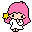
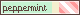

Floralchai ~ ♫
A scented flower of life.
My greetings! This is my corner of space where I share anything I know from thoughts to real life experience. The site is PG13, but containing a bit vent and self-reflection. Please don’t mind the dust here, as I try to bring you to my miracle land! For the sake of privacy and kindness please consult to the “Site guidelines” as you engage with the content of my site or contact to me through other networks. Apologies if I come as a bit odd to you since english is not my native language!
✷ You might find a surprise when hover or clicking on some images
✷ You can subscribe to my: 
Chiikawas | Check out my Chiikawa clique ❤︎
- A clique for Chiikawa fans
- Published in 22nd September 2025
Site guidelines ♪
- Common sense, privacy and politeness are the big importances here
- Everything in here serve a purpose for me to express
- Remember that I'm a chill girl. But please don't try to push my limits!
- Discriminations are prohibited but discussions of any topics are allowed, as long as you don’t violate “Rule 1”
- In here, I speak mostly about topics I keen on and media I enjoyed
- Site updates are not forced but rather discrete (around 3 updates a month)
- Personal matters, inquiries/questions should be emailed and NOT on the guestbook/garden. The answer is to email when you want a reply from me or comment at site profile
★ To get a gist of each section in the navigation, here is a list of description of what each of them primarily about
- Cottage 🐌 Basically just site things. Primarily guestbook, links, updates
- Flora 🏵️ My main passion, aspiration, a section about movies, series, other media & characters I fond on
- Fauna 🦌 People, irl things/topics/dicussions, serve mainly as a journal
- Reservoir 🌿 A reflection of myself, primarily media like pictures
- Memoir 📒 For other pages that are not related to the categories above. Consist of graphics, F2U template, and notably Weird Web October
★ What Cottage page contains of
- Buttons & links
- Credentials
- Guestbook (garden)
- More about the webmaster
- The corktree (sitemap)
- ...And a secret lucky clover page
 Enter the garden?
Enter the garden?
★ About me
I’m interested in any simplistic and cute objects/things. I’m passionate to learn more and explore more although I’m pretty much a home person. My specialty is HTML/CSS. I love my friends on the net and LOVE to discuss different topics with them!!
Current enthusiasm: Clamp's works, Pinterest, casual sweater or jumper, sunflower, Chiikawa, Esnupi, Moomin, Pop Team Epic ✿ Last updated: 09 November 2025
Hobbies: Learning, binging movies, read a good book, walking in the morning, talking to my puter friends
Current comfort characters: Elle Woods, Karen Smith, Kevin Gnapoor, Syaoran Li, Saki Hanajima, Kobato Hanato, Snoopy, Kabutomushi [scroll from left to right ↓]
Wanna know more about me?

ID Card ✿
| Name | Flora |
|---|---|
| Age | 20 years old |
| Pronouns | She/her |
| Occupation | Student |
Character images ♪


Listings ★ Cliques
Flora is enjoying life with Snoopy from Peanuts
Avril Lavigne
 Complicated
ComplicatedSanrio ♡ Lala



 I am angelic ♥
I am angelic ♥ 
Chiikawas ❤︎
My usual is an iced matcha latte
This site is:



Currently
Updates
- 02.3.2026: Created new blog post in fauna. Edited shrines preview
- 25.2.2026: Updated Kobato shrine and the Chiikawas clique
- 24.2.2026: Updated some pages. New scroll to top button, and removed "site log" to this update box
- 25.1.2026: Created the "Love Nikki" shrine
- 10.11.2025: Added a new blog post 100 webmaster questions
- 30.10.2025: Updated flora page and new blog post to fauna page. Added new pages to Weird Web October
- 12.10.2025: Created a new section called "memoir"
- 07.10.2025: Updated the guestbook. Created the button links page
- 22.9.2025: Created the "Chiikawas" clique
- 19.9.2025: Updated the credentials page (footer)
- 16.9.2025: Created media log (flora), expanded about me, and made page navigation easier
- 05.9.2025: Updated the features and the overall styling of fauna, flora, and cottage
- 30.8.2025: Created the fauna section and added 2 entries to it
- 21.8.2025: Created the media page, gallery page, and notable mentions
- 04.8.2025: Floralchai published, with a new domain name (previous publish was Tsukinio, first publish was Komichi)
Click here for joined webrings and badges I earned

Contact ✿
Email: tsubasamoomin@gmail.com
neocities profile 🐈


If you want to have info of my messanging apps (Discord, Messenger), contact me through the email above. And if I know you well I will offer the links ^_-
My ✿ Buttons
★ You are free to link back as of courtesy, here are my buttons


(other buttons)